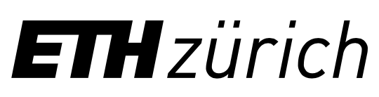

Member institutions of the SwissRN have formally committed to support the aims of SwissRN and have started their implementation at the institution.
Institutions
| Institution | Contact | Test | Test |
|---|---|---|---|
| UZH | Contact | ||
| unige | Contact | ||
| EPFL | Contact | ||
|  | ETHZ | Contact | |
| unibas | Contact | ||
| Test | 23 | ||
| Nina | 23 |
How to join
We expect that institutions seeking membership of SwissRN will want to develop capacity to deliver a research improvement strategy, and to work with SwissRN to develop a strategy for ensuring the sustainability of SwissRN in the medium- and long-term, and to build a community of institutions focused on research improvement.
Interested institutions please contact Eva Furrer.
It makes use of a variety of open source projects including:
Learn more and contribute on GitHub.
Setup
Some fun facts about Hugo:
- Built in Go
- Loosely inspired by Jekyll
- Primarily developed by spf13 on the train while commuting to and from Manhattan.
- Coded in Vim using spf13-vim
Have questions or suggestions? Feel free to open an issue on GitHub or ask me on Twitter.
Thanks for reading!